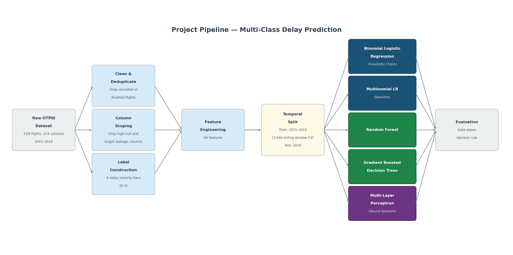
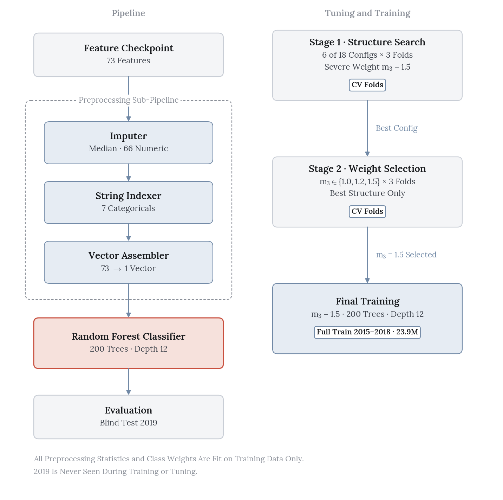
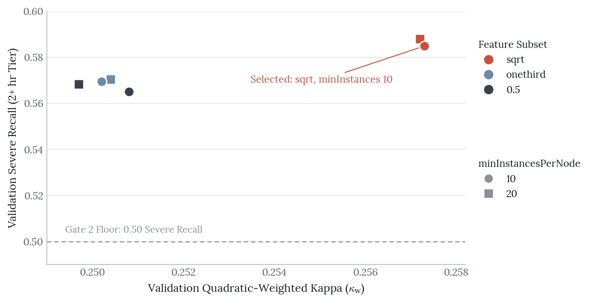
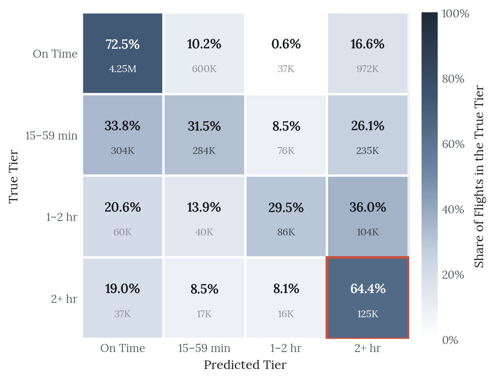
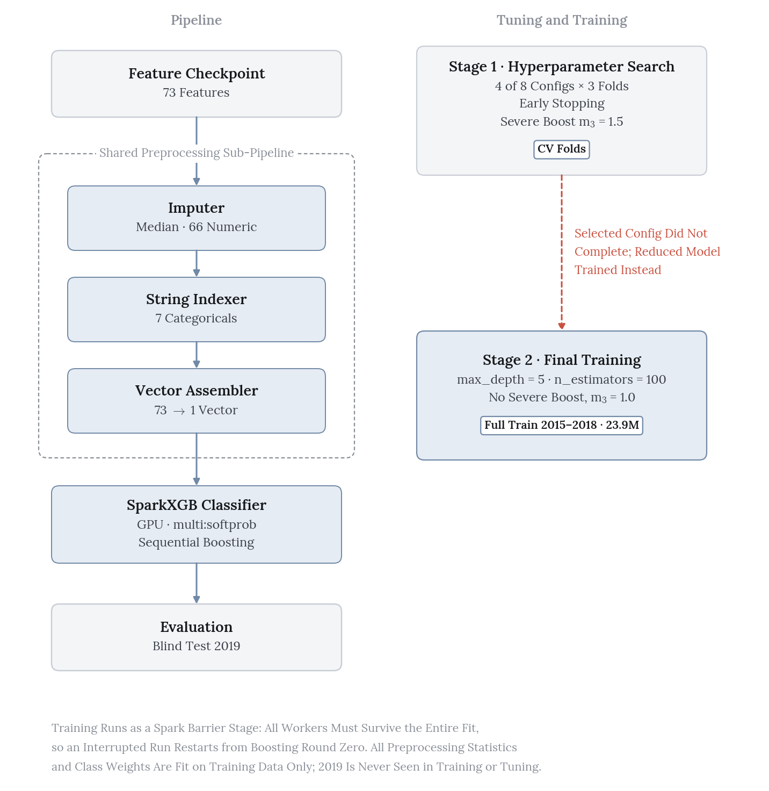
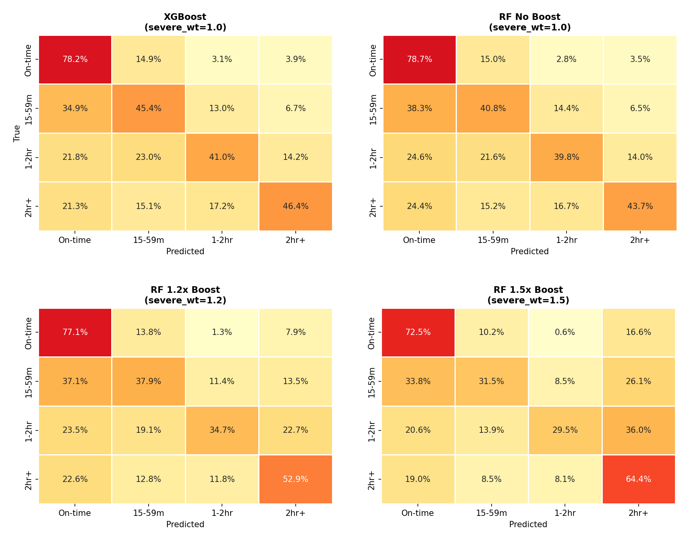
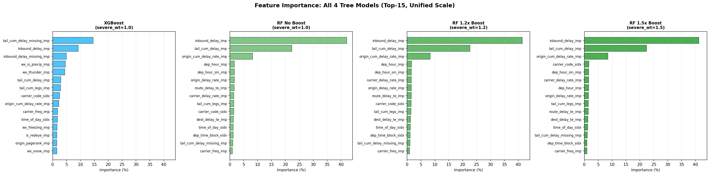

Predicting Flight Delay Severity at Scale
In collaboration with Parul Lakhotia, Ewura Impraim Mensah, Roshni Misra and Sarah Son
The Decision
Select the only model that clears the 50% severe-delay recall floor, even at the cost of overall agreement.
Takeaways
- The severe-weighted random forest recovered 64.4% of 2+ hour delays on the 2019 blind test.
- Pre-registering the decision rule made that trade defensible rather than convenient.
- Four model families stall at the same boundary, so the limit is the features, not model capacity.
Flight delays cost the US economy roughly $33 billion a year, more than half of it borne directly by passengers. This project predicts how late a domestic flight will arrive — not just whether it will be late — sorting each flight into four ordered tiers using only information available about two hours before scheduled departure.
The headline result is a negative-sounding one that I think is the most interesting part: the model we selected is the worst of our four finalists on overall agreement, and we selected it anyway, on purpose.
The Framing Problem
About 82% of flights arrive on time and only 2.2% are severely delayed. A model that predicts “on time” for everything scores 82% accuracy and is completely useless to an FAA operator, so accuracy was rejected as a success measure before any modeling started.
Instead the team pre-registered a decision rule, which mattered more to the final outcome than any hyperparameter:
- Gate 1 — macro F1 above the 0.224 four-class majority floor.
- Gate 2 — recall of at least 0.50 on the 2+ hour tier.
- Survivors rank on quadratic-weighted Cohen’s kappa (\(\kappa_w\)), which penalizes being wrong by three tiers far more than being wrong by one.
- An asymmetric expected cost per flight (ECPF) breaks ties, charging double for under-prediction, because missing a severe delay costs more than over-preparing for one.
Writing that rule down in advance is what made the final selection defensible rather than a post-hoc rationalization.

All of 2019 was held out as a blind test set (7.24M flights); 2015–2018 supported three-fold sliding-window cross-validation with a one-year train and three-month validation window per fold.
Random Forest: Buying Severe Recall
My Phase 2 forest failed Gate 2 badly — 0.351 severe recall against the 0.50 floor. For Phase 3 the data grew from one year to five (5.7M to 23.9M training flights) and the feature set from 41 to 73 columns. That alone wasn’t enough, so I added a severe-class weight multiplier on top of standard inverse-frequency weighting.

Staged Search
I ran selection in two stages rather than one large grid, because the weight axis and the structural axis interact and a single grid would have been both slower and harder to read.
Stage 1 fixed the multiplier at 1.5 and varied tree structure. Six of eighteen planned configurations completed before an executor crash halted the deeper trees, so maxDepth 15 and 18 remain untested.
| # | Feature subset | minInst | Val \(\kappa_w\) | Val macro F1 | Val severe recall |
|---|---|---|---|---|---|
| 1 ★ | sqrt | 10 | 0.257 | 0.416 | 0.585 |
| 2 | sqrt | 20 | 0.257 | 0.416 | 0.588 |
| 3 | onethird | 10 | 0.250 | 0.429 | 0.569 |
| 4 | onethird | 20 | 0.250 | 0.429 | 0.571 |
| 5 | 0.5 | 10 | 0.251 | 0.428 | 0.565 |
| 6 | 0.5 | 20 | 0.250 | 0.427 | 0.568 |
sqrt feature subsetting won on both \(\kappa_w\) and severe recall, and was also the fastest to train. Restricting per-split feature exposure seems to force trees onto the small number of high-signal propagation features that actually distinguish severe delays, instead of diluting splits across weak weather and calendar columns. Leaf size barely mattered: varying minInstancesPerNode between 10 and 20 moved every metric by less than 0.001, so the effective regularization was coming from bagging and feature subsampling, not from leaf constraints.
Stage 2 re-cross-validated the winning structure across severe-class multipliers. The result is cleanly monotonic — and it is the whole story of the project:
| \(m_3\) | Val \(\kappa_w\) | Val macro F1 | Val severe recall | Gate 2 |
|---|---|---|---|---|
| 1.0 | 0.398 | 0.451 | 0.410 | ✗ |
| 1.2 | 0.341 | 0.434 | 0.485 | ✗ |
| 1.5 ★ | 0.257 | 0.416 | 0.585 | ✓ |

Why Cross-Validating the Weight Mattered
This is the part I’d defend hardest. On blind-test numbers alone, \(m_3\)=1.2 looks like it passes Gate 2 — severe recall 0.529 — at much better ordinal agreement than 1.5 (\(\kappa_w\) 0.336 against 0.241). It would have been the obvious pick.
Cross-validation says otherwise: at \(m_3\)=1.2 the validation severe recall is 0.485, below the floor. Validation runs consistently harder than the blind test across all three multipliers, by 0.03 to 0.06 on severe recall, because each fold validates on a first-quarter window where delays are heavier and more weather-driven than a full year.
Selecting 1.2 on test evidence would have shipped a configuration that doesn’t reliably meet the operational floor on held-out data — exactly the failure a blind test exists to prevent.
The Frontier
The selected forest (200 trees, depth 12, sqrt subsetting, 1.5× severe weight) was the only model in the entire project to clear Gate 2 on the blind test, at 64.4% severe recall. It also has the worst \(\kappa_w\) and the highest expected cost of any finalist.
| Blind test (2019) | \(\kappa_w\) | Macro F1 | Severe recall | ECPF | Gate 2 |
|---|---|---|---|---|---|
| Multinomial LR (hybrid down/up) | 0.438 | 0.394 | 0.418 | 0.848 | Fail |
| MLP (oversample to 25%) | 0.490 | 0.493 | 0.399 | 0.715 | Fail |
| XGBoost (unboosted) | 0.406 | 0.455 | 0.464 | 0.877 | Fail |
| Random forest (1.5× severe boost) ★ | 0.241 | 0.402 | 0.644 | 1.743 | Pass |
The severe boost is not free under our own cost function. It recovers two-thirds of the 2+ hour tier by over-predicting severity across a large volume of on-time flights, and the asymmetric cost matrix charges for every one of those. The multiplier is best understood as an operating-point control, not an improvement in predictive quality.
What makes this a genuine frontier rather than a tuning failure is that it reproduces across model families. The MLP’s full-rebalance point reaches 0.489 severe recall but collapses to \(\kappa_w\) 0.339; the forest traces the same curve across its three multipliers. Four different model families all plateau at the same boundary.

Gradient-Boosted Trees, and What Went Wrong
I ran XGBoost expecting it to beat the forest. It didn’t get a fair trial.
The boosted configuration — the one that actually cleared Gate 2 on validation, at 0.534 severe recall — could never be trained to completion on the full five-year window. Runs died to driver out-of-memory failures, and only four of eight planned configurations finished. The XGBoost numbers reported above therefore come from a reduced, unboosted substitute, which is not the model I’d want judged.

The honest read is that XGBoost remains the most promising unexplored direction in the project: the validation evidence suggests a boosted configuration could hold Gate 2 at higher \(\kappa_w\) than the forest, which would dominate our selected model outright. It just needs more resilient compute than we had.
Dealing with that fragility shaped how I ran the searches. Because executors died mid-grid, I built checkpointing and failure retries into the search loop so that a crash cost one configuration rather than the entire run. That’s what let the random forest grid produce six usable points instead of zero.

The Ceiling Is in the Features
Feature importance is overwhelmingly delay propagation. inbound_delay alone accounts for 41.3% of total Gini importance, tail_cum_delay 22.4%, and origin_cum_delay_rate 8.5% — together about 72% of the model. Weather contributes roughly 3%, entering mostly through precipitation.

Per-class test recalls are 0.725 / 0.315 / 0.295 / 0.644 across the four tiers. The middle tiers sit near 30% in every configuration tested, and the confusion matrix shows those flights being absorbed into the adjacent on-time and severe tiers rather than confused with each other. No increase in trees, depth or weighting moved them.
The most plausible explanation is that a 20-minute delay and a 90-minute delay present near-identical signatures two hours before departure. If that’s right, the binding constraint is the feature set — specifically the thin weather and network signal available at that horizon — and not model capacity. That’s a useful thing to learn, because it redirects the next round of effort away from bigger models.
Limitations
The search is incomplete. Six of eighteen random forest grid points and four of eight XGBoost configurations finished. All six surviving forest points sit at maxDepth 12, so the selected model may be a local rather than global optimum.
Generalization is strong, which is itself a signal. Train-to-test \(\kappa_w\) gaps are 0.005, 0.001 and 0.001 across the three multipliers; for the selected model train and test agree to three decimal places (0.242 vs 0.241). The model is underfitting, not overfitting — more evidence that the constraint is signal rather than variance.
Phase 3 is not uniformly better than Phase 2. Severe recall nearly doubled (0.351 to 0.644) while \(\kappa_w\) fell from 0.426 to 0.241. It is better on the criterion the stakeholder called non-negotiable and worse on overall agreement. Both halves of that sentence need saying.
What I’d Do Next
The immediate lever is a cost-sensitive ensemble — a cost-weighted blend of the forest’s severe sensitivity with the MLP’s tier ranking — to recover \(\kappa_w\) without giving up the Gate 2 pass. Completing the forest depth grid and training the boosted XGBoost configuration on more resilient compute would settle whether a boosted model can hold the gate at higher agreement. Longer term, the feature ceiling is best attacked with richer weather signal — destination-airport conditions and multi-hour trajectories rather than a point-in-time snapshot — instead of additional model capacity.
References
Ball, M. et al. “Total Delay Impact Study: A Comprehensive Assessment of the Costs and Impacts of Flight Delay in the United States.” NEXTOR / FAA (2010).
Data: On-Time Performance with Weather (OTPW), joining U.S. DOT/BTS on-time performance records to NOAA hourly weather observations.